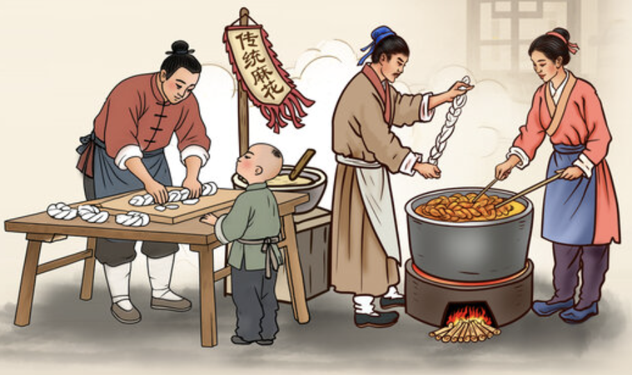

The Story Behind Kung Pao Chicken
Sichuan cuisine has never been shy — it speaks in fire, fragrance, and a confidence that fills the wok before you even add the oil. And among all its bold creations, Kung Pao Chicken stands out not because it is fancy, but because it is unforgettable.
The legend begins in the late Qing Dynasty with a governor named Ding Baozhen. He was a strict official but a passionate eater, especially fond of a particular stir-fried chicken that balanced heat, sweetness, and the numbing spark of Sichuan peppercorns. The dish eventually took on his honorary title, Gong Bao, transforming a bureaucratic nickname into a culinary signature.
Yet the magic of Kung Pao Chicken isn 't in the name — it 's in the choreography.
The sizzling chilies that warn you before you taste the heat.
The peppercorns that don 't burn but buzz, like tiny electric sparks
The peanuts that crackle through the sauce to remind you that flavor isn 't just taste — it 's texture and sound.
As the dish traveled across oceans, it adapted. In the West, it became gentler, sweeter, sometimes even polite. But the original Sichuan version remains a small explosion in a bowl — not aggressive, but confidently alive.
Kung Pao Chicken isn 't just a recipe. It 's a conversation between history, heat, and the place where culture meets appetite.